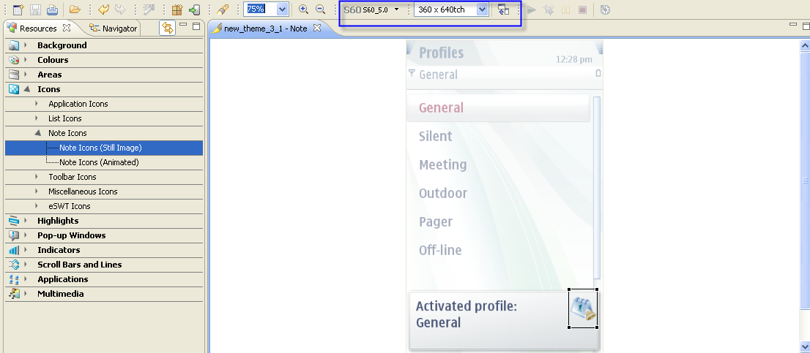

The Carbide.ui 2.0 supports S60 5.0 elements. To start using S60
5.0 elements , from the tool bar you switch platforms. For more
information on switching platforms see Selecting a
Platform Release.
Once you select the S60 5.0 platform option, the resolution of the
theme changes and its refelected in the layout of theme in the Editor.

You can identify the S60 5.0 elements in the Properties View.
The supported
elements will be highllighted as 5th
in the platforms section in Properties view.